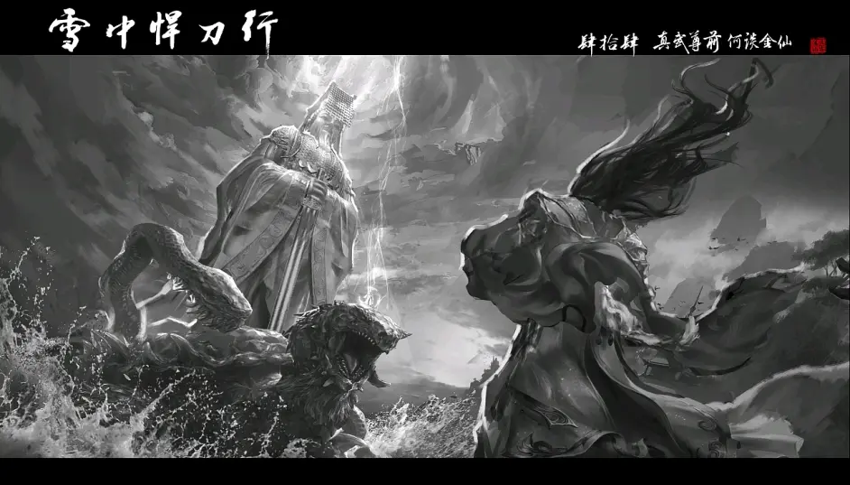

徐凤年，字天狼。生于xx年，卒年不详，祖籍辽东锦州，离阳武厉凉王徐骁长子，祥符元年世袭北凉王，性武勇宽厚。祥符元年冬，北莽陈兵百万压北境，凉王率军御敌。祥符三年秋，大破莽军，攻占北莽南朝，立不世边功。
凉王少时丧母，性乖张跋扈，横行北凉，其恶名不逊其父威名。恶礼法，轻圣贤。天资聪颖，师承春秋名士李义山，习王道。善书，棋，犹善品鉴，其父好名珍古器，数藏王府
雍洪六年，凉王入京面圣观皇子封礼，后楚曹长卿携后楚女帝姜姒御剑连闯十八门以扬威。凉王以十二飞剑破女帝飞剑，朝臣皆惊，乃信凉王孤身旅莽。国子监学官以其跋扈，于御道斥两任凉王之暴行，凉王怒破御道数十丈，立誓率军抵御北莽，为离阳百姓而守国门。
祥符元年武厉凉王薨，凉王世袭，新立流州，建拒北城，大兴书院。时文人学士，多赴北凉。北凉王府清凉山立石碑三十余万，以祭边关英烈，且刻徐凤年徐龙象之名，以彰北凉死战之志。
祥符元年冬，后楚兴兵作乱，北莽乘虚而攻北境，北凉军三十万铁骑独战百万莽军，大急。凉王亲率幽州万骑，自两辽绕行入北，斩东线莽军数万，葫芦口引敌深入，一万大雪龙骑伏兵而出，大破北莽柔然铁骑，立数里京观，凉王沙场首战功成。
祥符三年秋末，北凉大胜，凉王立不世边功，威名不输其父。战后，凉王不知所踪，生死不详。
阳嘉元年，帝撤北凉藩制，原北凉王府改制北凉经略使府，谥封凉王徐凤年武桓